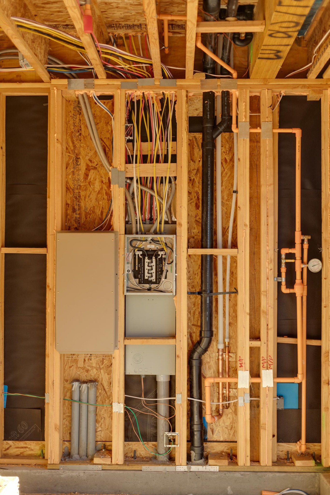

Step 1
Lock Down Your Home Systems (Before Something Breaks)
In 2026, repairs are expensive and scheduling trades can take time. The best moment to learn your home is before an emergency forces you to.
Do this this week
- Locate the main water shutoff and test that it turns.
- Find the electrical panel and label breakers (kitchen, HVAC, etc.).
- Identify gas shutoff (if applicable) and note the location.
Do this in 30 days
- Schedule an HVAC tune-up (especially before peak season).
- Replace filters and note sizes in your phone.
- Check water heater age; plan proactively if it’s near end-of-life.
Small win: Take 10 photos (panel, shutoffs, water heater label) and store them in your phone album called “House”.